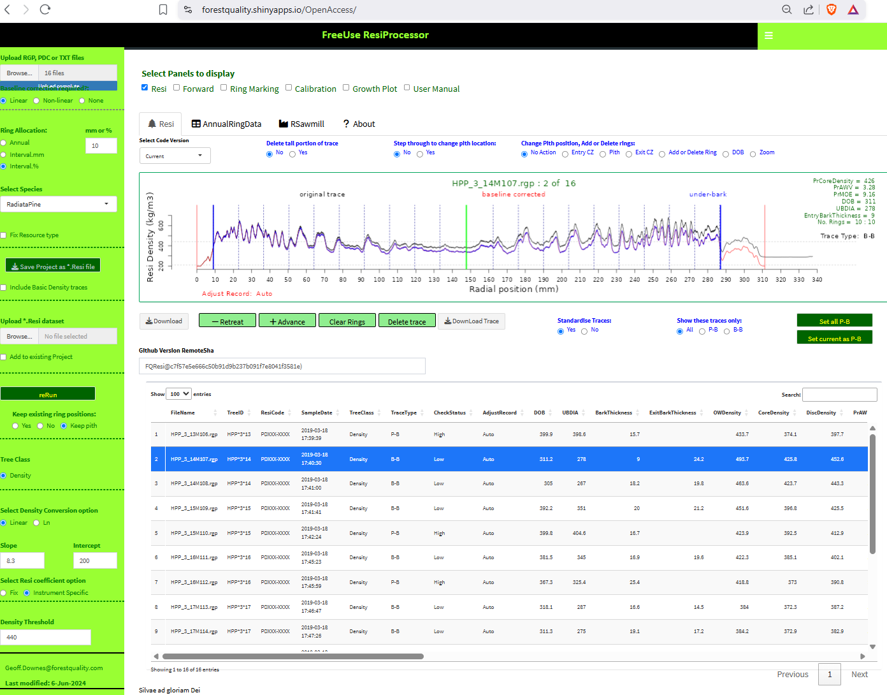

Trace processing
FQ began working quantitatively with resistance drilling using the IML PD-400 instrument (https://imlaustralia.com/product/iml-powerdrill/). The objective was to predict acoustic wave velocity (HM200: https://www.fibre-gen.com/hitman-hm220) that was typically used by New Zealand industry to assess log stiffness in radiata pine. Others have also pursued the relationship between Resi data and wood stiffness (Sharapov et al. 2019). However it became obvious that, if commercial application of the technology was going to be cost-effective, the processing of the individual traces produced by the IML PD series drills, needed to be simple, fast and robust, requiring minimal or no user involvement.
At FQ we set about developing and testing a web platform application that would do all trace processing and data extraction that a commercial user would require and more. The result has been that resistance drilling combined with our web platform services for wood property assessment has now become;
- routine in much of the Australian softwood and hardwood estate.
- used in many research and commercial trials demonstrating the quantitative link between standing tree and product
- becoming incorporated into growth and yield tables
- adopted in an increasing range of countries including NewZealand, Indonesia, China and Brazil